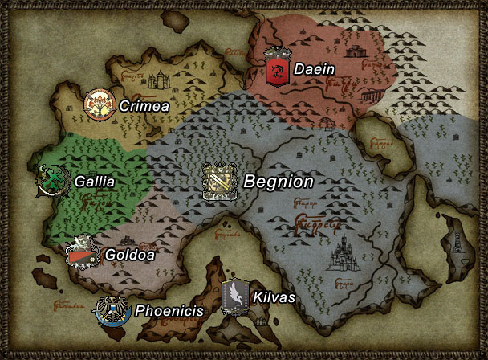

Video Games as Social Commentary
viewed through Fire Emblem: Path of Radiance and Radiant Dawn
Warning: Unsurprisingly, the content of this website contains major spoilers for Fire Emblem: Path of Radiance and Fire Emblem: Radiant Dawn.
Introduction
Can video games be a platform for social change? Unlike books and movies, video games today still carry the stigma of being purely for entertainment while other forms of media have been adapted to carry heavy themes to influence people’s opinions. A growing category of games, titled “Serious Games”, has been created to refer to any game whose primary purpose is something other than entertainment, but for a multitude of reasons, games of this genre have failed to gain traction outside of niche markets, limiting their influence on the larger gaming market. It can be argued, however, that Serious Games may have taken the wrong approach by sacrificing gameplay. A recent trend for video games focused purely on entertainment to deliver compelling storylines coupled with engaging gameplay has given shape to a new, albeit indirect, medium for hosting social commentary.
One example of a mainstream game that does this gameplay-commentary aspect very well are Fire Emblem: Path of Radiance and Radiant Dawn, a surprising choice given the overall popularity of the series. The rest of this essay will first aim to highlight the magnitude of the themes covered within these two games and then identify the particular elements of these games that made the messages conveyed so effective. These two games will then serve as the focal point through which the effectiveness of entertainment-focused games as a platform for social commentary will be explored.
Exposition
This section provides some exposition on the Fire Emblem series and Tellius, the setting of Path of Radiance and Radiant Dawn, needed to understand the major themes highlighted in the next section.
Fire Emblem
Fire Emblem is a Nintendo owned franchise of turn-based JRPG strategy games. Players control an army of units and fight through various maps by defeating enemies from the opposing army. Similar to other JRPGs, units will level up as they defeat more enemies and have stats describing the unit’s effectiveness in battle. A defining feature of the series is permanent character death; if any of the player’s units are killed, those units remain dead for the rest of the playthrough. The game gives incentive for players to avoid carelessly killing off their units by giving each unit their own character and personality. Individual levels are framed in terms of a larger story, usually focused around the main character fighting a war to save their country from evil invaders. The main character and story typically change with each new installment in the series, though there are exceptions. The series is well known both for its compelling strategy gameplay and its story, which keeps players motivated as they progress through the levels.
Fire Emblem: Path of Radiance is the ninth game released in the series and follows Ike, the leader of a righteous band of mercenaries fighting to stop the advances of an evil king. Fire Emblem: Radiant Dawn is Path of Radiance’s sequel, set 3 years after the end of the previous game. It follows Micaiah, the leader of a resistance group hoping to overthrow her country’s oppressive occupiers before returning to Ike’s point of view.
Tellius
Tellius is the name of the continent that both games take place on. It is home to two main categories of sentient inhabitants: normal humans, referred to as Beorc, and shapeshifters who can transform between human-like and fully animal forms, referred to as Laguz. There are several categories of Laguz based on whether their animal form is of a beast, bird, or dragon. There is a long history of tension between these two races, which serves as a primary motivator for the conflicts in both games.
Themes
Racism
Beorc and Laguz have a long history of abusing each other. Early on, the Laguz overpowered and mistreated the Beorc. However, by the events of Path of Radiance, the Beorc have turned the tables by inventing effective weapons and magic. The mutual hatred between Beorc and Laguz is firmly ingrained in minds of Tellius civilians with mistreatments occurring in both directions, though it can be argued that Beorc have done worse to Laguz than the other way around. Laguz are referred to by most Beorc with the derogatory term of “sub-human” and are treated very poorly: slavery, using specialized potions to trap Laguz in their animal forms and forcing them to act as beasts of labor, was a widespread practice in the Beorc nation of Begnion.
Perhaps the worst case of Laguz persecution is the Serenes Massacre, an event that marked the genocide of the peace-loving Heron Laguz by angry Begnion civilians. The incident first started when the ruler of Begnion was assassinated by an unknown party, later revealed to be the evil Begnion senators looking to seize power. The senators pinned the blame on the Herons, a lie that caught on with the civilians due to the ingrained distrust of Laguz. Motivated by their hatred, an angry mob of civilians then stormed Serenes Forest, home of the Herons, and burned the forest down, killing nearly the entire Heron population in the process.
Warfare
Radiant Dawn in particular goes out of its way to portray warfare in a profoundly negative light and features many aspects that are morally gray, in contrast with the more typical divide between good and evil featured in most other games of the genre. Following the defeat of the evil king of Daein in Path of Radiance, Radiant Dawn reveals the fallout of that war that is almost never touched upon by other games. In particular: the queen of the newly liberated nation of Crimea has to deal with a rebellion challenging her pacifistic policies. The nation of Daein was left in shambles from the war, and the people are now suffering under Begnion occupation.
In order to tell this multi-faceted story, players switch between armies they are controlling throughout the game, but as a series first, two of the controllable armies end up fighting each other. Players, knowing the motivations of both sides, get a full view of how pointless much of the fighting in this game is. It is revealed later on in the game that the true masterminds have forced one of the player controlled armies into fighting against their will, using a curse that forces the leader of the army to comply with the masterminds’ commands else the entire population of their country be wiped out. However, from the perspective of each main character, not much is known about the other side other than the fact that they are enemies, which leads to some truly questionable moral decisions made by people who are inherently good. This description applies primarily to the character Micaiah – while a gentle person at heart, she is fiercely loyal to the people of Daein to the point that, upon inheriting the curse, she has her army use tactics such as trapping her enemies in a canyon and burning them alive in order to save her people, even though she holds no animosity towards her enemies herself. It takes someone threatening to drop her best friend off a cliff to finally stop Micaiah’s attacks, where she then realizes how far she has gone off the moral compass.
Analysis
Themes Analysis
The premise of these games share many similarities with that of World War II. Both games feature a continent-wide war between nations, akin to how the real World Wars involved much of the countries around the world. The Serenes Massacre is portrayed as the culmination of the evils perpetuated by racism and is a thinly-veiled reference to the Holocaust. The events that led up to the massacre share many parallels with Fascism: the fascists were able to convince an entire population that it was acceptable to mistreat and kill an entire group of people just off of their religious beliefs, just like how the Begnion Senate was able to brainwash its civilians into committing genocide on a wholly innocent people. The references even go down as far as the reaction of the population after their unspeakable actions were called out – the Begnion citizens felt guilty after realizing that the Herons were innocent, but the deep-rooted distrust of Laguz prevented them from rising up against the Senators who have tricked them.
Understandably, both games take a strong stance against both racism and needless warfare and promotes peace across nations. This sort of theme is not unusual for Japanese games, which have been known in the past to reference recent events or tragedies. Whaley found that natural disasters and concerns about Japan’s declining birthrate were some of the most common themes. Antiwar themes are especially popular given the contrast between Japan’s pacifist foreign policy today and the ruthless military ambition of its past; the people of Japan today have realized the error of their ways and want to make sure that such ideas are called out for being the morally wrong ideas they are. Such themes are most common in JRPGs or visual novels, as the prominence of story enables these themes to be conveyed. Genres focused solely on gameplay, on the other hand, would have difficulty including these themes in a way that is presentable to the players.
Platform Analysis
There are aspects of the Fire Emblem series as a whole that make it a particularly well suited platform for conveying themes around social commentary. First, story plays a big part of the franchise and is what enables themes to be conveyed in the first place. Second, the permanent character deaths gives the enables the series to emphasize characterization, allowing players to get invested with the main characters and sympathize with their point of view, which then allows the messages to be framed with the appropriate context. Third, the game’s premise about medieval kingdoms at war gives the series many opportunities to highlight the consequences of constant violence, even though most of the games fail to take advantage of this and stick with the typical glorified battle trope.
Despite the suitability of the series as a platform, it still often comes as a surprise to gamers when serious themes are covered in video games because the story is generally not the primary selling point of games, unlike with books and movies. This discrepancy between playing games for entertainment versus conveying some social commentary has resulted in the creation of the Serious Games genre, a category of games that describes games where the primary focus is education rather than gameplay. An example of a serious game includes The Redistricting Game, a game designed to get players to write to Congress about policy changes (Swain). While players of these games have had generally a positive response pertaining to what they have learned from the game, serious games have been unsuccessful at breaking past niche markets because of the widespread stigma that games should be primarily for entertainment purposes.
Reception
While neither game sold very well at release due to the low popularity of the Fire Emblem series at the time, the games have gained a surge of popularity in recent years. Although the renewed popularity can be attributed to the overall increased popularity of the Fire Emblem series as a whole, Path of Radiance and Radiant Dawn became well known particularly for its deep story. Players in general were surprised that heavy themes such as racism were present in the game, with mixed reception. Some found the themes to be too pushed, while others were really appreciative that the game developers were brave enough to explore sensitive topics in a video game story.
Works Cited
Bogost, Ian. "The rhetoric of video games." The ecology of games: Connecting youth, games, and learning (2008): 117-140.
Breuer, Johannes S., and Gary Bente. "Why so serious? On the relation of serious games and learning." Eludamos. Journal for computer game culture 4.1 (2010): 7-24.
Goto-Jones, Chris. "Playing with Being in Digital Asia: Gamic Orientalism and the Virtual Dōjō." Asiascape: Digital Asia 2.1-2 (2015): 20-56.
Swain, Chris. "Designing Games to Effect Social Change." DiGRA Conference. 2007.
Zagal, José Pablo. "Ethically Notable Videogames: Moral Dilemmas and Gameplay." DiGRA Conference. 2009.